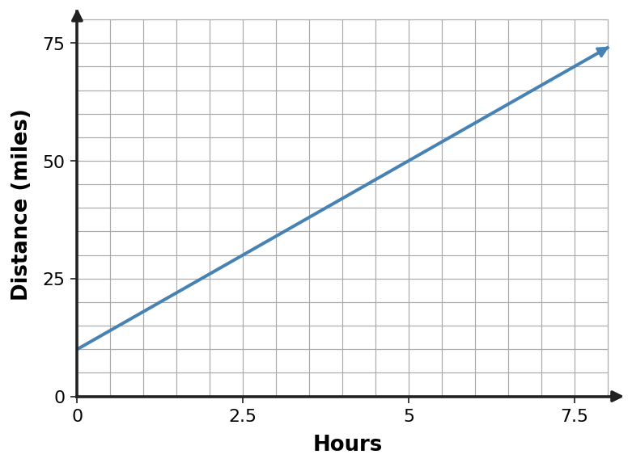

Learning Target
Students will graph linear functions and interpret key features.
- I can build graphs of linear functions using slope and intercept information.
- I can use key features of a line to interpret a relationship.
- I can extend a graph to predict outputs within a meaningful range.
Vocabulary / Key Notation Preview
slope • intercept • $y=mx+b$ • linear graph • scale
Sort the vocabulary. Write each vocabulary word in the column that best matches what you know right now. You may move a word later.
| Know for sure | Recognize | Don't know yet |
|---|---|---|
What's to Come
DO NOT SOLVE IT YET.
Circle anything familiar, underline symbols, labels, conditions, data, or features that seem important, and write short notes about what you think may matter later.
The graph shows a savings account growing at a steady pace. Do not write an equation yet.

(a) What amount is present at week 0? (b) Describe how the savings change from one week to the next. (c) Name two points that would help someone recreate the graph accurately. (d) Predict a reasonable value at week 7.
Teaching note: Ask students to identify quantities, labels, repeated changes, and features they think will matter later. Collect observations without confirming or solving the WTC.
Let's Get Started
Skim the section. Record what catches your attention before you read closely.
| What I noticed | |
|---|---|
| What I predict | |
| What I wonder |
READ IN SHORT CHUNKS.
Annotate the words and visuals together. Underline evidence, circle or highlight bold vocabulary, label arrows, measurements, or important features, connect sentences to figures, and jot short questions or connections in the margins.
I can build graphs of linear functions using slope and intercept information.
A linear equation in slope-intercept form, $y=mx+b$, packages two graph features into one rule. The coefficient $m$ gives the slope, while $b$ gives the $y$-intercept, the point where the line crosses the vertical axis. Because every point on the line is a solution to the equation, these features are not decorations; they organize the whole graph.
To graph from $y=mx+b$, begin at $(0,b)$. Then use the slope as a repeated vertical-over-horizontal move. For $m=\frac{2}{3}$, move right 3 and up 2, or left 3 and down 2. For a negative slope, the vertical and horizontal moves have opposite signs. More than one correct slope triangle is possible.
Graph scale must be read before making slope moves. One grid square does not automatically equal one unit. If horizontal squares count by 2 and vertical squares count by 5, moving one square right and one square up represents a slope of $5/2$, not 1. A correct graph depends on the equation and the scale together.
- In $y=-\frac12x+6$, where is the $y$-intercept?
- What repeated graph move represents the slope $-\frac12$?
- Why can a student not assume one grid square equals one unit?
Teacher answer:
- The $y$-intercept is $(0,6)$.
- For example, right 2 and down 1, or left 2 and up 1.
- Axis scales may count by values other than 1, so the numerical changes must come from labels rather than square counts alone.
Teaching note: Listen for students connecting the representation to the language of the exact I-can; press for evidence when answers are only numerical.
Discourse Moves
Teacher Moves
- Ask students to predict whether the line rises or falls before plotting points.
- Compare two valid slope triangles for the same line and ask why both work.
- Probe the graph scale explicitly before accepting a slope move.
Student Moves
- Use $b$ to place the starting point.
- Describe slope moves in numerical units, not just squares.
- Check plotted points by substituting them into the equation.
$$y=mx+b$$
- $m$ = slope = change in $y$ per 1 unit of $x$
- $b$ = $y$-intercept = output when $x=0$
Example: $y=-2x+5$ starts at $(0,5)$ and falls 2 units for each 1 unit moved right.
Example 1: Graph From Equation
Graph $y=-x+4$. Mark the $y$-intercept and at least one additional point that shows the slope.
Teacher answer:
The graph crosses the $y$-axis at $(0,4)$ and has slope $-1$. One additional point is $(2,2)$.
You Try It 1: Graph From Equation
Graph $y=0x+6$. Mark the $y$-intercept and at least one additional point that shows the slope.
Teacher answer:
The graph crosses the $y$-axis at $(0,6)$ and has slope $0$. One additional point is $(2,6)$.
Which graph feature should you check first before making the next move?
Teacher answer: Check intercept, slope sign, and axis scale before extending the graph.
Example 2: Table To Graph
Plot the ordered pairs from the table and draw the linear function through them. Then state its slope and $y$-intercept.
| $x$ | $y$ |
|---|---|
| $-2$ | $-1$ |
| $0$ | $0$ |
| $2$ | $1$ |
| $4$ | $2$ |
Teacher answer:
The line has slope $\frac{1}{2}$ and $y$-intercept $(0,0)$.
You Try It 2: Table To Graph
Plot the ordered pairs from the table and draw the linear function through them. Then state its slope and $y$-intercept.
| $x$ | $y$ |
|---|---|
| $-2$ | $-9$ |
| $0$ | $-3$ |
| $2$ | $3$ |
| $4$ | $9$ |
Teacher answer:
The line has slope $3$ and $y$-intercept $(0,-3)$.
I can use key features of a line to interpret a relationship.
A line can be interpreted through several key features. The slope tells how rapidly the output changes and whether the relationship increases, decreases, or stays constant. The intercept tells the output when the input is zero, which is often a starting value in a context.
A graph is a collection of ordered-pair solutions. A point such as $(4,18)$ means that when the input is 4, the output is 18. This allows equations, tables, and graphs to check one another. If a plotted point does not satisfy the equation, either the graph or the calculation needs attention.
In a context, interpretation matters more than naming symbols. For a gym cost graph, the intercept may represent a joining fee and the slope may represent dollars per visit. The same geometric line features have different meanings when the axis quantities and units change.
- What feature tells whether a linear function is increasing or decreasing?
- What does a point $(x,y)$ on a graph say about the corresponding equation?
- In a savings context, how are slope and intercept likely to have different meanings?
Teacher answer:
- The sign of the slope.
- The ordered pair is a solution: substituting the input produces that output.
- Slope is the amount added per time interval; intercept is the starting amount at input 0.
Teaching note: Listen for students connecting the representation to the language of the exact I-can; press for evidence when answers are only numerical.
Discourse Moves
Teacher Moves
- Ask “What does this point mean?” before “What are its coordinates?”
- Have students compare the meaning of slope in two different contexts.
- Press for evidence from both the line and the axis labels.
Student Moves
- Interpret slope and intercept with units.
- Connect a graph point to an equation solution.
- Use graph features to explain increasing or decreasing behavior.
| Feature | What it tells you |
|---|---|
| slope | rate and direction of change |
| $y$-intercept | output at input 0 |
| ordered pair | one input-output solution |
| axis scale | actual numerical size of graph moves |
Example 3: Read Graph Features
Use the graph to identify the $y$-intercept and describe whether the function is increasing or decreasing.

Teacher answer:
The $y$-intercept is $(0,4)$. The function is decreasing because the slope is $-2$.
You Try It 3: Read Graph Features
Use the graph to identify the $y$-intercept and describe whether the function is increasing or decreasing.

Teacher answer:
The $y$-intercept is $(0,-2)$. The function is increasing because the slope is $\frac{1}{2}$.
How can the equation or table verify the plotted line?
Teacher answer: Substitute a point or compare slope/intercept to confirm the graph.
Example 4: Context To Graph
A gym charges a 30-dollar joining fee plus 8 dollars per visit. Sketch a graph with visits on the horizontal axis and total cost on the vertical axis. Identify what the intercept means.
Teacher answer:
The graph is a line with slope $8$ and vertical intercept $30$. The intercept represents the starting total cost.
You Try It 4: Context To Graph
A savings account starts with 45 dollars and grows by 10 dollars each week. Sketch a graph with weeks on the horizontal axis and savings on the vertical axis. Identify what the intercept means.
Teacher answer:
The graph is a line with slope $10$ and vertical intercept $45$. The intercept represents the starting savings.
Example 5: Scale Error
On a graph, each horizontal grid step is 2 units and each vertical grid step is 5 units. A student moves right 1 square and up 1 square and calls the slope 1. Identify the error and correct it.
Teacher answer:
The slope is $5/2$, not 1, because grid squares represent different numerical changes.
You Try It 5: Scale Error
A student graphs $y=\frac12x-4$ by moving right 1 and up 2 from $(0,-4)$. Identify the error and correct it.
Teacher answer:
The slope $1/2$ means right 2 and up 1, or an equivalent ratio.
I can extend a graph to predict outputs within a meaningful range.
A straight line can be extended to estimate outputs because a linear rule assumes the same rate continues. When the requested input lies inside the displayed or observed range, the prediction is usually an interpolation within information already represented by the model.
Predictions should stay connected to a meaningful range. A graph may mathematically continue forever, but a real situation may not. Negative time, impossible quantities, or inputs far beyond the situation can produce outputs that are mathematically consistent with the line but not useful in context.
To make a prediction from a graph, locate the input carefully using the axis scale, move to the line, and then read the matching output. Estimating between grid marks is sometimes appropriate. The strength of the prediction comes from the linear pattern and from staying in a range where that pattern is intended to apply.
- What is the first axis-scale step when reading a prediction from a graph?
- Why is a prediction inside the displayed range generally more defensible than one far outside it?
- Give an example of a mathematically possible graph input that might be meaningless in a real context.
Teacher answer:
- Identify the requested input value correctly on the horizontal axis using the labeled scale.
- It requires less assumption that the same linear behavior continues beyond the information shown.
- Accept: negative time, negative number of tickets/items, an age far outside the studied range, etc.
Teaching note: Listen for students connecting the representation to the language of the exact I-can; press for evidence when answers are only numerical.
Discourse Moves
Teacher Moves
- Have students identify whether a requested input is inside or outside the shown range.
- Ask what assumption is made when the line is extended.
- Invite a student to challenge a prediction using context rather than arithmetic.
Student Moves
- Read predictions from axis scale carefully.
- Explain why range and context affect confidence.
- Distinguish mathematical continuation from a meaningful real-world prediction.
Graph prediction: input $\rightarrow$ line $\rightarrow$ output.
Check that the input is meaningful and that the linear pattern is being used within a defensible range.
Example 6: Graph Prediction
Read the trip graph to estimate the distance at 6 hours. The requested time is inside the displayed 0-to-8-hour window.

Teacher answer:
At 6 hours the graph gives about $90$ miles. This uses the model within its displayed range.
You Try It 6: Graph Prediction
Read the trip graph to estimate the distance at 2 hours. The requested time is inside the displayed 0-to-8-hour window.

Teacher answer:
At 2 hours the graph gives about $26$ miles. This uses the model within its displayed range.
Summary
- $y=mx+b$ connects slope and $y$-intercept directly to a line.
- Graph scale, ordered pairs, slope, and intercept all contribute evidence about a linear relationship.
- Linear graphs can support predictions when the input is meaningful and the model is being used in an appropriate range.
Common Mistakes
| Mistake | Repair |
|---|---|
| Plotting $b$ on the wrong axis | The $y$-intercept is always on the vertical axis at $(0,b)$. |
| Counting squares instead of units | Read each axis scale before using slope moves. |
| Extending a graph without context limits | Check whether the requested input is meaningful for the situation. |